India already has a visible group of domestic companies in Battery Energy Storage System (BESS) manufacturing, but they are not all at the same stage of maturity. Some are already manufacturing batteries, packs, containerized systems, or balance-of-system solutions for stationary storage, while others are still building out large-scale lithium-ion cell capacity that will deepen localization over the next few years.
Current market projections indicate that the Indian BESS market will scale to approximately 74 GW / 411 GWh by 2032, driven by declining battery costs, favorable policy incentives, and a robust procurement pipeline from utilities and the commercial and industrial sectors. This surge in demand has catalyzed a multi-billion-dollar wave of domestic manufacturing investment, as the country seeks to establish a self-reliant supply chain for Advanced Chemistry Cells (ACC).
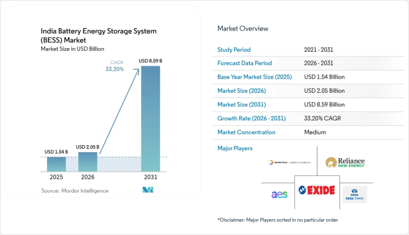
For practical industry discussion, the companies that can credibly be described as already active in Indian BESS manufacturing include Exide Industries, Amara Raja Energy & Mobility, HBL Power Systems, Waaree Energies, JSW Energy, and, at a more project-led rather than manufacturing-led stage, Reliance Industries and Tata Power. The distinction matters because in India today, “BESS manufacturing” often covers several layers: cell manufacturing, module and pack assembly, container integration, PCS-controls integration, and full system EPC.
Companies Already Active
Reliance New Energy: The Jamnagar Green Industrial Nerve Centre
Reliance Industries Limited (RIL), through its subsidiary Reliance Energy , is spearheading the most comprehensive new energy ecosystem in the country. The company is developing the Dhirubhai Ambani Green Energy Giga Complex in Jamnagar, Gujarat, spanning over 5,000 acres. This complex includes specialized gigafactories for photovoltaic panels, fuel cells, green hydrogen, power electronics, and energy storage. The scale of this initiative is designed to be world-leading, with the green energy complex alone occupying approximately 44 million square feet, which is nearly four times the size of Tesla’s Nevada gigafactory.
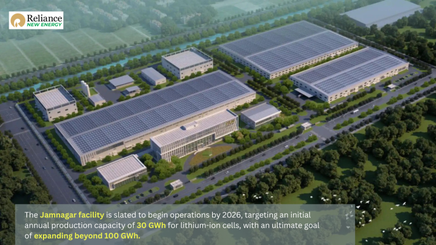
Reliance’s BESS manufacturing strategy is predicated on technology ownership and rapid commercialization of diverse chemistries. The company has acquired Faradion Limited , a global leader in sodium-ion technology, to provide a strategic hedge against lithium scarcity and supply chain vulnerabilities. Sodium-ion batteries, which utilize abundant and inexpensive sodium, are particularly suited for grid-scale stationary storage where weight and energy density are less critical than lifecycle cost and safety. Concurrently, Reliance is fast-tracking the production of Lithium Iron Phosphate (LFP) solutions through its acquisition of assets from Lithium Werks . The Jamnagar facility is slated to begin operations by 2026, targeting an initial annual production capacity of 30 GWh for lithium-ion cells, with an ultimate goal of expanding beyond 100 GWh.
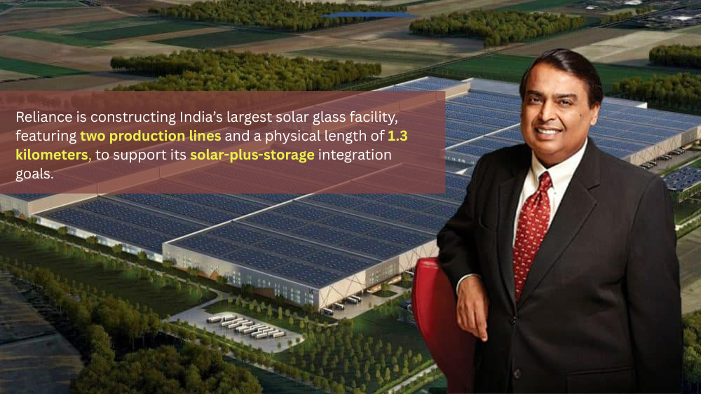
The groups approach emphasizes a quartz-to-module philosophy, ensuring that even the precursor materials and solar glass are manufactured in-house. Reliance is constructing India’s largest solar glass facility, featuring two production lines and a physical length of 1.3 kilometers, to support its solar-plus-storage integration goals. In the financial sphere, Reliance emerged as a dominant winner in the second round of the government’s Production Linked Incentive (PLI) for Advanced Chemistry Cells, securing 10 GWh of capacity based on a high overall score in the quality and cost-based selection mechanism.
The Tata Group: Agratas and Tata Power Synergy
The Tata Group entry into the battery manufacturing sector is managed through Agratas, its dedicated global battery business. Agratas – A Tata Enterprise is currently constructing a 20 GWh battery manufacturing facility in Sanand, Gujarat, spread over 320 acres. As of early 2026, the project has reached significant construction milestones, including the completion of the main structural steel framework. The facility's design is focused on high-speed, automated production to meet the demands of both the electric mobility sector and the stationary energy storage market.
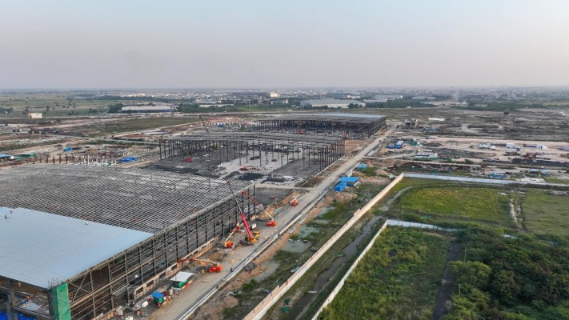
Agratas operates in close coordination with other Tata Group companies, specifically Tata Projects and Tata Consulting Engineers, for the physical execution of the plant, and Tata Power Renewable Energy Limited (TPREL) for market deployment. TPREL has already established itself as a leader in utility-scale storage procurement, having commissioned multiple flagship projects, including a 120 MWh system in Maharashtra and a 100 MW BESS in Mumbai. The synergy within the group allows Tata to offer Battery-Backed Supply Purchase Agreements (BESPA), which provide utilities with firm, dispatchable renewable energy by leveraging the BESS manufacturing and integration capabilities of the group’s various divisions.
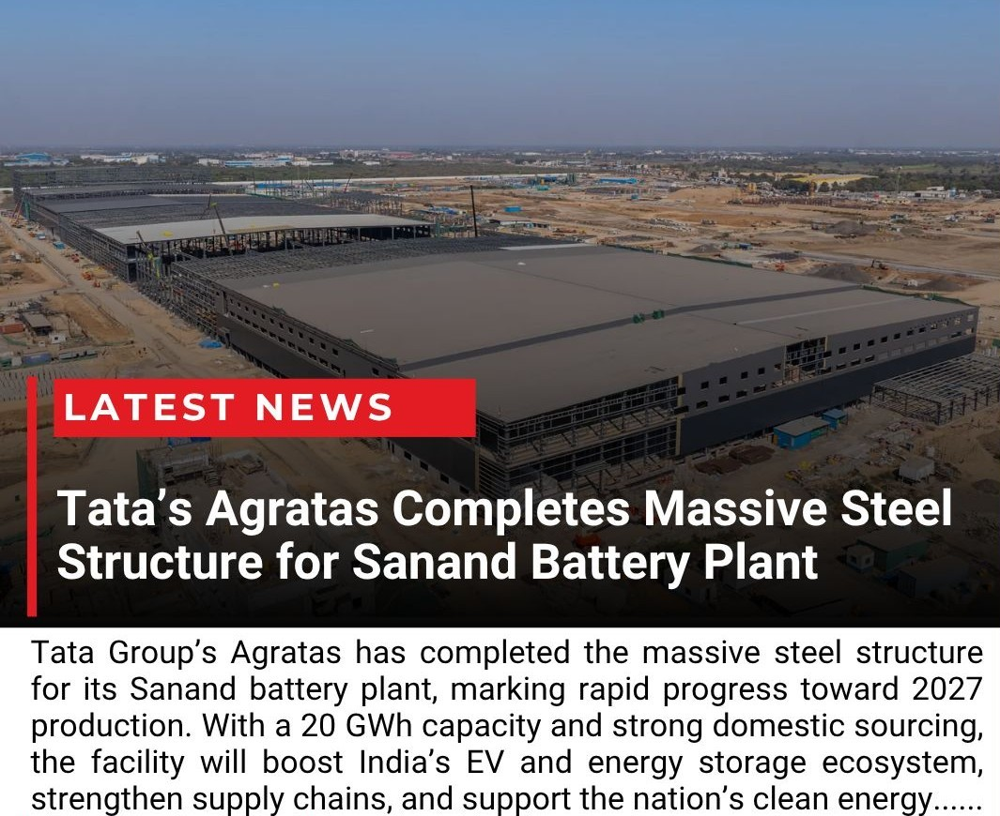
Adani Energy Solutions: The Khavda Mega-Installation
Adani Energy Solutions Ltd. (AESL) has adopted a strategy focused on massive single-location deployments that leverage the group’s extensive transmission and renewable generation footprint. The group is deploying an 1126 MW / 3530 MWh BESS project at Khavda, Gujarat, which is recognized as the world’s largest renewable energy plant. This project, featuring more than 700 BESS containers, will be the largest BESS installation in India and among the world’s most significant single-location storage assets once commissioned by March 2026.
While the manufacturing of cells is handled through Adani New Industries Limited (ANIL), the integration and grid-connected operations are the domain of AESL. The group’s roadmap involves scaling its storage footprint to 15 GWh of BESS capacity by March 2027, with a long-term target of 50 GWh over the next five years. This manufacturing and deployment scale is designed to support peak load management, mitigate solar curtailment, and provide round-the-clock power availability for the Indian grid.
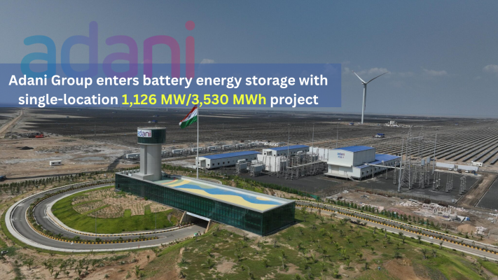
JSW Energy: Federal Tenders and Global Partnerships
JSW Energy Ltd is rapidly expanding its presence in the BESS manufacturing sector through aggressive bidding in federal tenders and strategic international collaborations. The company is currently constructing a 1.0 GWh BESS project awarded by the Solar Energy Corporation of India Limited (SECI), with commissioning targeted for June 2025. JSW’s storage strategy is supported by a planned 10 GWh battery manufacturing joint venture with South Korea’s LG Energy Solution (LGES). The venture, involving an investment of over USD 1.5 billion, will see LGES providing the technology and equipment while JSW handles the financial investment and domestic project execution.
The LGES-JSW partnership is intended to serve JSW’s internal requirements for energy storage projects and its forthcoming electric vehicle brand, while also positioning the company as a major supplier in the Indian market. By 2030, JSW Energy aims to reach a total energy storage capacity of 40 GWh, including both battery and pumped hydro storage.
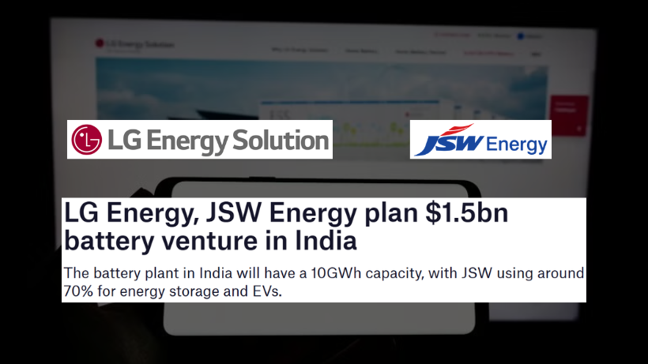
Amara Raja Energy & Mobility
Amara Raja Energy & Mobility Ltd is arguably the most credible Indian BESS manufacturing name after Exide because it already has physical pack assembly capacity and a large-scale localization roadmap. The company has disclosed roughly 1.2 GWh of stationary pack assembly capacity at Tirupati, alongside mobility pack capacity elsewhere in Andhra Pradesh.
At the same time, Amara Raja’s Giga Corridor in Telangana is being developed around a 16 GWh lithium battery cell project plus a 5 GW battery pack production plant, and the group inaugurated a battery pack assembly plant in 2024. This combination of existing pack manufacturing and under-construction cell capacity makes Amara Raja one of the few Indian firms that can credibly claim to be already active while also scaling toward deeper localization.
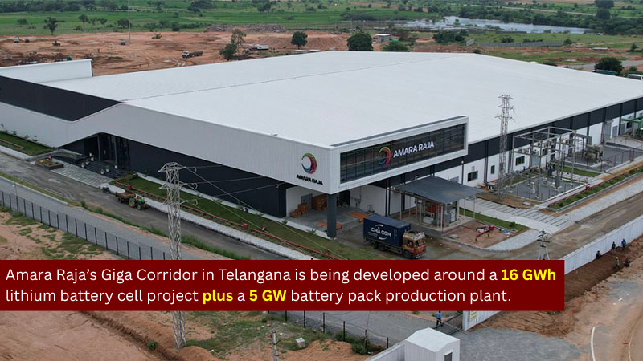
Waaree Energies
Waaree Energies has moved from being primarily a solar manufacturing company to becoming a serious storage manufacturing entrant. Through Waaree Energy Storage Solutions, the company approved an increase in planned lithium-ion advanced chemistry cell and BESS manufacturing capacity from 3.5 GWh to 20 GWh.
Mercom India also reported Waaree is scaling domestic battery storage manufacturing with a 4 GWh lithium-ion cell line and a 5 GWh pack-and-container facility to support both utility-scale and commercial-and-industrial demand. That makes Waaree one of the more important “already entering and building” Indian BESS manufacturers, especially because its strategy includes both cell production and containerized system assembly rather than only EPC deployment.
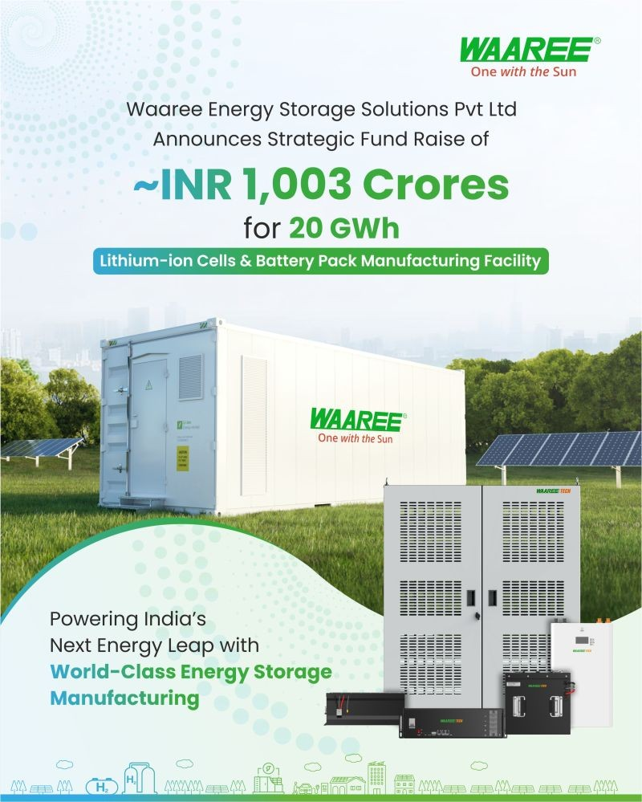
Exide Industries
Exide Industries Limited is one of the clearest examples of an Indian company already in BESS manufacturing because it combines an established battery manufacturing base with a dedicated lithium-ion expansion for stationary storage. Exide Energy Solutions, its wholly owned subsidiary, is developing a 12 GWh lithium-ion cell manufacturing facility in Bengaluru, with Phase I at 6 GWh and commercial production expected around FY26 end.
Importantly, Exide has explicitly said the business will manufacture and market lithium-ion cells, modules, and packs for both EV and stationary energy storage applications. That means Exide is not just a future possibility for BESS—it is already positioned across the battery manufacturing layers that matter for stationary storage localization in India.
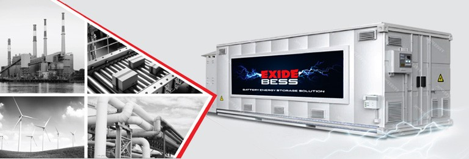
HBL Power Systems
HBL Power Systems deserves inclusion because it is not merely talking about storage; it already presents itself as a BESS supplier and has a long domestic battery manufacturing pedigree. The company’s public materials state that it has installed BESS for rail, defence, and industrial applications, and its BESS division markets on-grid and off-grid energy storage systems.
Unlike some newer entrants, HBL’s strength comes from decades of manufacturing specialized batteries and power electronics in India. It may not yet command the same visibility in utility-scale renewable storage as Exide or Amara Raja, but it is one of the more clearly established Indian manufacturers already supplying storage hardware and integrated systems.
Specialized Manufacturers and Solar Integrated Players
A distinct group of solar manufacturers and specialized technology firms are entering the BESS manufacturing space, often focusing on integrated solar-plus-storage solutions for the commercial, industrial, and distributed segments.
Log9 Materials: The LTO Advantage for Indian Conditions
Log9 Materials , a Bengaluru-based technology startup, commissioned India’s first commercial lithium-ion cell manufacturing line at its Jakkur plant in 2023. The facility has an initial capacity of 50 MWh and produces indigenously developed Lithium Titanium Oxide (LTO) and LFP cells. LTO batteries are uniquely suited for the Indian market due to their exceptional thermal stability, high cycle life (often exceeding 15,000 cycles), and ultra-fast charging capabilities.
While LTO batteries carry a higher upfront cost compared to standard LFP chemistry, their longevity and safety in tropical climates make them a preferred choice for high-utilization stationary storage and rapid-charging mobility applications. Log9 has also launched its indigenous Battery Management System, Charvik, which utilizes advanced algorithms to ensure safety and reliability for high-power applications.
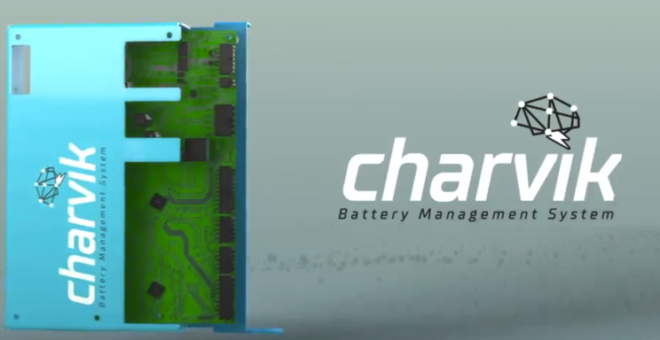
GP Eco Solutions: The iNVERGY Brand and C&I Focus
GP Eco Solutions India Ltd. is an emerging player in the BESS market, primarily through its subsidiary iNVERGY India Pvt Ltd. The company manufactures commercial BESS units ranging from 400 kWh to 5 MWh and focuses on the residential and industrial sectors. As of late 2025, the company reported a BESS capacity of over 500 MWh across India, with plans to reach 3 GWh by Q4 FY26. Their product portfolio includes hybrid solar inverters and LiFePO₄ battery systems integrated with advanced energy management software for real-time monitoring and microgrid coordination.
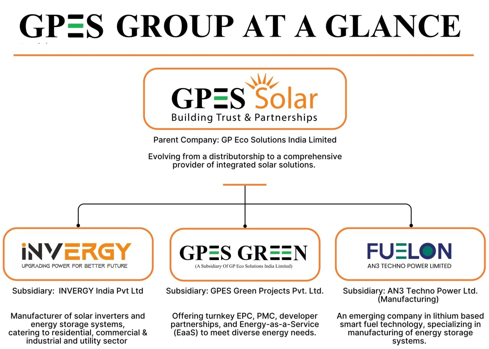
Lucas TVS and TVS Indeon: Ramping Up Pack Production
TVS Indeon, a subsidiary of the automotive components leader Lucas TVS , has significantly expanded its battery pack production facility at the SIPCOT Industrial Park in Tamil Nadu. The plant commenced operations in 2024 with a production capacity of 1 GWh and the potential to manufacture 1,500 battery packs daily. By March 2026, the company expects to reach its maximum installed capacity, primarily supplying lithium-ion battery packs to TVS Motor Company and the broader energy storage segment. This expansion is part of the Lucas TVS group’s broader diversification into electric mobility and stationary storage components.
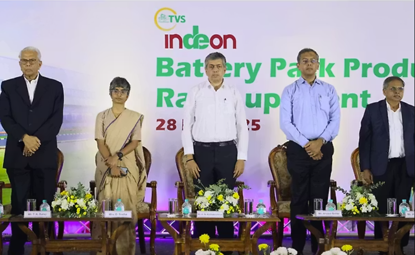
Waaree Energies: 20 GWh Expansion Ambitions
Waaree’s BESS offerings, such as the LIGER, LION, and LIT series, are designed for high energy density and modular installation, catering to requirements ranging from small-scale systems to utility-scale grid applications. The company’s vertical integration strategy—combining solar module, inverter, and battery manufacturing—allows it to offer comprehensive renewable energy systems with high round-trip efficiency, exceeding 94%.
The Circular Economy: Recycling and Second-Life BESS
As the first generation of electric vehicle batteries reaches the end of its automotive life, a significant opportunity has emerged for repurposing these batteries for stationary storage, followed by critical mineral recovery through recycling.
Lohum Cleantech: Repurposing and Mineral Recovery
LOHUM Cleantech is India’s largest producer of sustainable critical minerals and manage approximately 90% of the country’s lithium battery recycling capacity. The company has pioneered a circular economy model by repurposing end-of-life EV batteries into second-life BESS for renewable energy storage and telecom backup. This second-life strategy extends the battery's lifespan before it undergoes hydrometallurgical processing to recover lithium, cobalt, and nickel at purity levels of 99.5% to 99.9%.
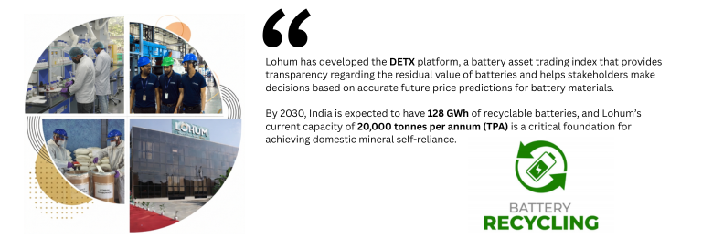
Lohum has developed the DETX platform, a battery asset trading index that provides transparency regarding the residual value of batteries and helps stakeholders make decisions based on accurate future price predictions for battery materials. By 2030, India is expected to have 128 GWh of recyclable batteries, and Lohum’s current capacity of 20,000 tonnes per annum (TPA) is a critical foundation for achieving domestic mineral self-reliance.
Strategic Partnerships in Recycling
The partnership between LOHUM and Log9 Materials is a notable example of industrial circularity. Under this alliance, Lohum repurposes Log9’s annual production of 250 MWh of LTO EV batteries into stationary energy storage solutions after they reach their end-of-first-life. This collaboration ensures a zero-carbon footprint for the batteries while maximizing their economic utility before final recycling.
Operational Case Studies: Leading BESS Projects in India
The real-world application of BESS technology in India provides critical insights into the performance and integration challenges of domestic systems.
Modhera "Suryagram": India's First 24x7 Solar-Powered Village
The Modhera solar project in Mehsana, Gujarat, represents a pioneering integrated state-of-the-art solar-plus-storage initiative. The project consists of a 6 MW ground-mounted solar plant paired with an 18 MWh BESS system, utilizing FIMER inverters and Mahindra Susten as the EPC contractor. The BESS system allows the village to be self-reliant, charging from solar power during the day and discharging to homes and the historic Sun Temple during the night. The deployment also includes 1,383 rooftop solar systems and over 1,700 smart meters for real-time demand-supply management.
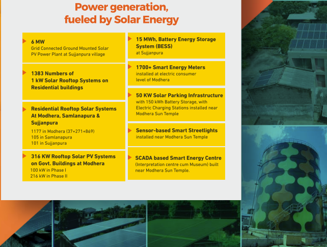
Tata Power-DDL: Grid-Scale Pioneering in Delhi
Tata Power Delhi Distribution Limited (TPDDL) inaugurated South Asia’s first grid-scale battery energy storage system in Rohini, Delhi, in 2019. The 10 MW system, owned by AES and Mitsubishi, provides grid stabilization, peak load management, and enhanced reliability for over 2 million consumers. Utilizing lithium-ion NMC chemistry, the system has successfully completed over five years of operation and has demonstrated the utility of fast-ramping storage for frequency regulation in an urban distribution network.
Furthermore, TPDDL has collaborated with Nexcharge to commission a 150 kW / 528 kWh Community Energy Storage System (CESS) at the Rani Bagh substation. This DT-level storage system is designed to mitigate peak loads on distribution transformers and provide emergency power to critical facilities like hospitals during outages.
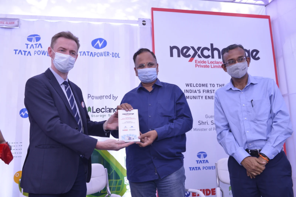
ACME Solar: Merchant Arbitrage in Rajasthan
ACME Solar Holdings Ltd. has recently commissioned several phases of BESS projects in Jaisalmer, Rajasthan, reaching a total capacity of 285 MW / 601.904 MWh. These projects operate on a merchant basis, charging from the grid during off-peak hours and discharging during peak periods to capture revenue from price differentials. ACME’s in-house EPC and O&M capabilities allow it to manage the entire project lifecycle, and the company plans to expand its storage portfolio to over 3 GWh across multiple special purpose vehicles.
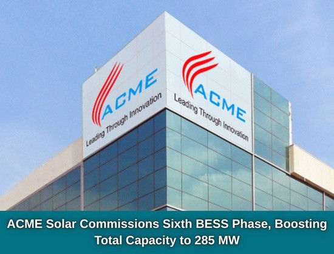
Competitive Analysis and Financial Dynamics
The BESS manufacturing sector is characterized by high capital intensity and a competitive bidding environment that exerts pressure on margins.
Revenue and Profitability Metrics
In the BESS market, companies like Amara Raja have demonstrated superior profitability metrics compared to peers. In Q2 FY26, Amara Raja posted an operating margin of 12% and a net profit margin of 8.91%, outperforming Exide's 9% and 3.99% respectively. This reflects Amara Raja's efficiency and leadership in high-growth segments like AGM technology and its strong connection with vehicle manufacturers.
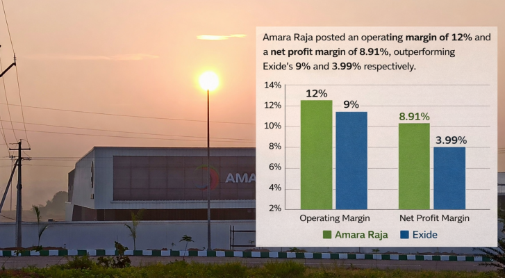
Exide, however, maintains a massive revenue base of INR 16,588 crores and leverages its extensive brand recognition and broad product portfolio across automotive and industrial segments. The success of these legacy firms in the BESS space will depend on their ability to ramp up lithium-ion cell production while maintaining their margins in the highly competitive utility-scale bidding market.
Small-Cap Chemical Innovators
The BESS value chain also offers opportunities for specialized chemical companies. PCBL Chemical Limited (part of the RP-Sanjiv Goenka Group) is positioning itself as a pioneer in battery chemicals through The Nanovace Project. The company is developing Super-Conductive Carbons, Nano-Silicon, and Acetylene Black, which are critical for enhancing the performance of next-generation batteries. PCBL is constructing a pilot plant in Gujarat and aims for a 2,000-ton commercial plant by the end of FY28, targeting a 50% bottom-line margin from this high-tech chemical segment.
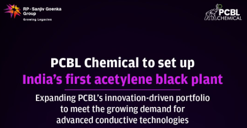
Conclusion
The evolution of the BESS manufacturing sector in India is a microcosm of the global energy transition. With multi-billion-dollar gigafactories taking shape in Gujarat, Telangana, and Karnataka, and a supportive policy environment through PLI and VGF, India is transitioning from a consumer of battery technologies to a primary manufacturer. The success of this industrial pivot will be a cornerstone of India's ability to achieve its ambitious climate targets and ensure grid stability for its burgeoning digital and industrial economy.
For a business article, the cleanest line is this: India already h
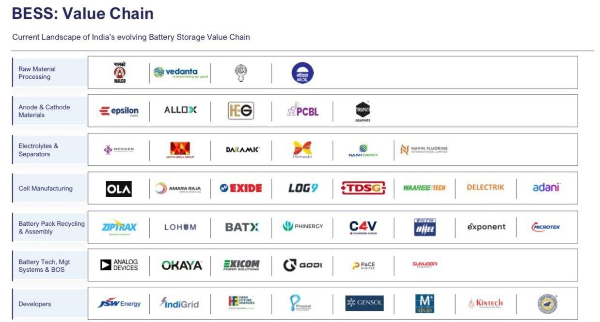
as a first wave of domestic BESS manufacturers, led by legacy battery companies and a few new energy entrants, but the market is still transitioning from pack-and-system assembly toward full cell-to-container localization. That transition is exactly what will determine which Indian companies become long-term leaders in utility-scale storage over the next three to five years.